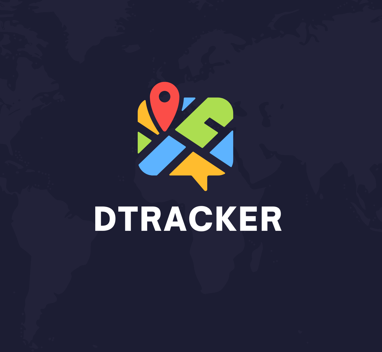
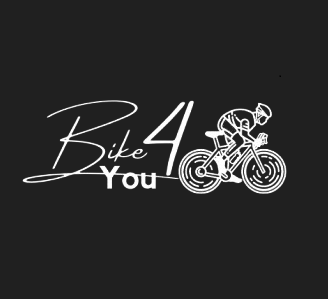
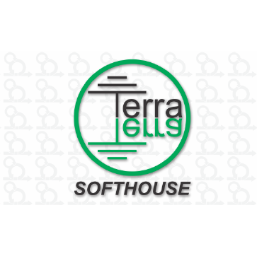

Juliana M. Manso
Olá, seja bem-vindo(a) ao meu perfil. Me chamo Juliana, possuo dez anos de experiência na área financeira (ênfase em tesouraria), e decidi transicionar de carreira para a área de tecnologia. Atualmente, sou estudante de Desenvolvimento de Software Multiplataforma na FATEC de Jacareí-SP com formação prevista para dezembro de 2025.
Projetos Acadêmicos
D-Nutri

Devs Domain (2º semestre/2024):
✯ O desafio proposto foi especificar e construir uma aplicação mobile que permitisse ao usuário registrar e monitorar sua ingestão diária de calorias e nutrientes, auxiliando no controle da alimentação e na manutenção da saúde.
✯ Neste projeto, atuei como desenvolvedora e Product Owner, fiz a parte de Backlog da Sprint, Backlog do Produto, histórias de usuários, requisitos funcionais e não funcionais, splash, back-end, front-end e navegação entre as telas de "Começar", "Cadastro" e "Login", back-end da lógica e contabilização da quantidade consumida de água, back-end e front-end do cálculo e contabilização do "IMC" e "TMB" por usuário.
✯ Tecnologias utilizadas: Typescript, ReactNative, HTML, CSS, MongoDB, Postgres, Node.js, Jira, Git e GitHub
D-Tracker
Equipe Devs Domain (1º semestre/2024):
✯ Projeto ganhou 🏆a competição entre todas as turmas do curso DSM da FATEC de Jacareí, no qual foi desenvolvida uma ferramenta de gestão exclusiva para o gerente do projeto, onde ele pode gerenciar os dados indicados pelo editor e revisor. O sistema permite ao gestor delimitar a área do projeto, fazer upload de dados de suporte, cadastrar usuários (editores e revisores), atribuir áreas de trabalho e extrair estatísticas. Desta forma, a ferramenta visa melhorar a eficiência e a qualidade dos projetos de mapeamento, centralizando as tarefas de gestão dos dados fornecidos pelos colaboradores envolvidos no processo.
✯ Neste projeto realizado em, atuei tanto no back-end quanto no front-end, desenvolvendo a tela "Meus Projetos". Trabalhei no design e na responsividade da tela de login, além de criar a barra de navegação lateral e os links de navegação correspondentes. Também implementei o filtro de projetos com visualização no Dashboard, incluindo o gráfico de pizza e os cards de "New Tasks".
✯ Tecnologias utilizadas: Typescript, React, HTML, CSS, MongoDB, Node.js, Git e GitHub
Bike4You
Equipe Devs Domain (2º semestre/2023):
✯ Desenvolvimento de uma aplicação web peer-to-peer para conectar proprietários e interessados na locação de bicicletas. O aplicativo atua apenas como intermediário entre as partes sem qualquer responsabilidade de pagamento.
✯ Neste projeto, fui responsável pelo mapeamento do banco de dados relacional e atuei principalmente na parte de front-end, desenvolvendo a página de gerenciamento de contas. Também contribui com o check-up e as alterações finais para garantir a responsividade de todas as páginas, mantendo o padrão visual geral do projeto.
✯ Tecnologias utilizadas: Typescript, Postgres, React, HTML, Node.js, Git e GitHub.
Site de treinamento Scrum
Equipe Terra Software House (1º semestre/2023):
✯ Projeto utilizou a metodologia Scrum. Ele consiste no desenvolvimento de um sistema web que apresenta todos os processos e artefatos da metodologia ágil (Scrum), além de testes de fixação, tornando o sistema intuitivo e de fácil utilização.
✯ Neste projeto, atuei integralmente na parte da Documentação utilizando HTML, CSS, Git e GitHub.